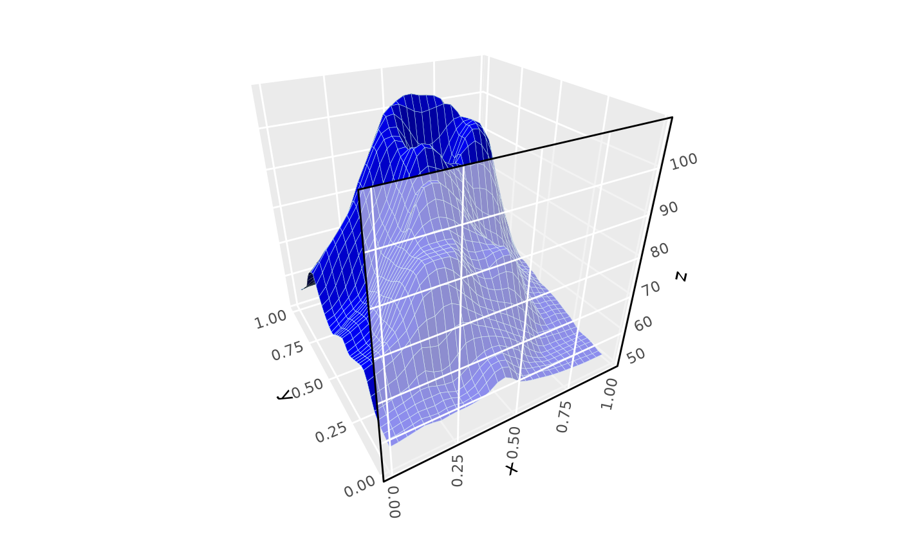
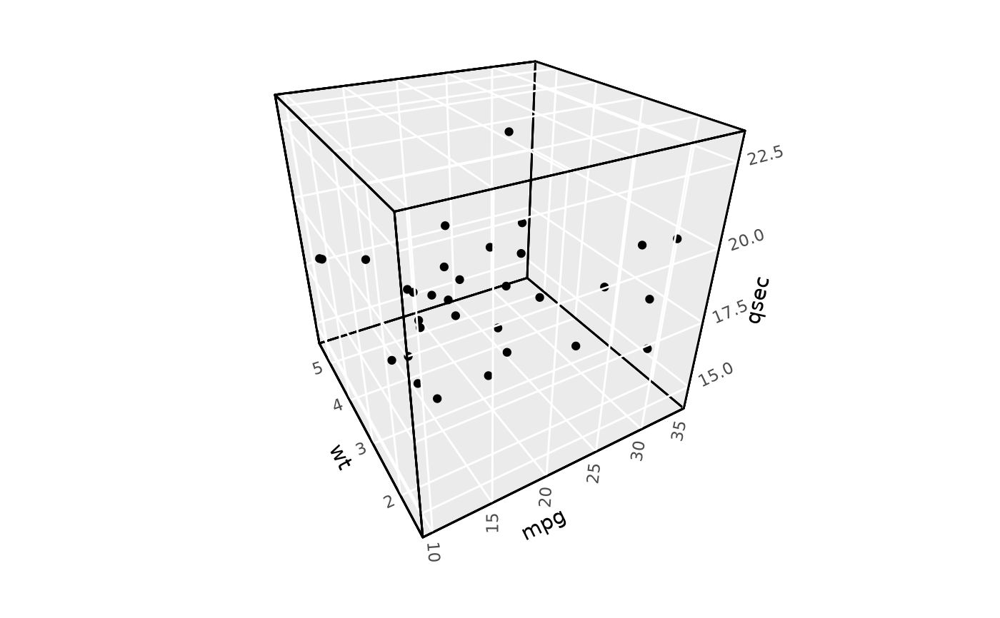

This function extends ggplot2::element_rect() to support transparency
via an alpha parameter. It maintains full backward compatibility with the original
element_rect() function while enabling transparent panel styling,
particularly useful for foreground panels in 3D plots.
Usage
element_rect(
fill = NULL,
colour = NULL,
linewidth = NULL,
linetype = NULL,
color = NULL,
inherit.blank = FALSE,
size = lifecycle::deprecated(),
alpha = NULL
)Arguments
- fill
Fill color for the rectangle. Use
NAfor no fill.- colour, color
Line color for the rectangle border. Use
NAfor no border.- linewidth
Line width for the rectangle border.
- linetype
Line type for the rectangle border (e.g., "solid", "dashed").
- inherit.blank
Should this element inherit from
element_blank?- size
![[Deprecated]](figures/lifecycle-deprecated.svg) Use
Use linewidthinstead.- alpha
Transparency level for the rectangle fill, ranging from 0 (completely transparent) to 1 (completely opaque). Particularly useful for styling foreground panels in 3D plots to create layered visual effects.
Value
A theme element object that can be used in theme() specifications.
See also
element_rect for the original function,
coord_3d for 3D coordinate systems that utilize foreground panels
Examples
# Basic 3D plot with semi-transparent foreground panels
ggplot(mountain, aes(x, y, z)) +
stat_surface_3d(fill = "darkblue", color = "lightblue", linewidth = .1) +
coord_3d(panels = c("background", "ymin")) +
theme(panel.foreground = element_rect(alpha = 0.6))

# Completely transparent foreground panels
ggplot(mtcars, aes(mpg, wt, qsec)) +
geom_point() +
coord_3d(panels = "all") +
theme(panel.background = element_rect(color = "black"),
panel.foreground = element_rect(fill = "blue", alpha = 0))
